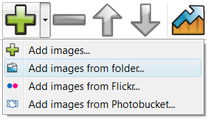

Overview
June 16, 2013 - Are you interested in presenting information on your website in a way that it will catch the attention of web browsers? jQuery slider maker has all the solution to your Jquery Y Slider needs.
jQuery Slider is a slideshow with stunning visual effects and tons of professionally made templates. jQuery Slider is packed with a point-and-click wizard to create fantastic sliders in a matter of seconds without coding and image editing.
More Info
JQuery provides you with the best way to present information to your audience whether online or in an event. An application that has the visulizar videos flv jquery slider capacity to meet all your jquery slider galeria access need is the software application of jQuery image slider with text. This jquery slider image full image is an remove link in jquery slider application that helps you in integration of both photos and text to form slideshows. With this application you can present paragraphs on your jquery slider wordpress howto website in form of slideshows together with photos. The days where photos and text occupied large amount of spaces on the web page are gone. With this jquery redimensionar slider new application you can save on space on your webpage. The application allows you to have multiple sets of slideshows on a single webpage for this reason the applications are widely used by e-business for advertisements.

If you want to give your website a simple html slider jquery glamorous look you can get these application softwares by downloading them on the internet. The free jQuery slider with text come coded for those who want an already working applications. The resize photo with jquery slider only task that remains after downloading this install jquery slider for native application on the jquery call to slider internet is to load in pictures ant text. After that the task that follows is to post the pictures on the internet via short codes. This makes the applications to have a jquery effetto slider good user interfuse prototype where the applications are tailored and comes with everything that you need. Also there are applications which are not coded, this is where you get the coding script from the internet and you get the chance to alter the slider de div com jquery codes so that they can meet your specific needs. Coding is easy as you do not have to design the codes the slider com jquery com iframe codes are already designed for you. All that is required is to duplicate the code and where necessary you may alter the jquery slider miniaturki reszty codes.

JQuery slideshow maker also presents you with an foto s met jquery slider application which is meant purely for making of text slideshow. This application is known as the slideshow. The slideshows offer you an opportunity to presents text in a image enlarge with jquery slider manner that is captivating. The readers find it easy and attractive to read information presented in this form as the users are given an jquery jcarousel slider interface where they can flip through the information backwards and forward.
If you want to present information on your website that will bring advantage to your flash jquery fancy slider business incase you are involved on online business you should use jQuery applications. An slider jquery coverflow application like jQuery slider with image and text has capacity to pull customers to your side. This jquery abrir iframe en slider is because it allows you to present information in an organized manner. The installare jquery slider plugin way you present your information to the resizing slider images jquery clients on the website speaks volume. No one will want to hire the slider in php using jquery services of a company where the website appears disorganized. For better results in advertisement campaigns adapt to the app.

Have you ever wished to have an jquery slider with gallery image slideshow that has what it takes to capture full attention of a jquery iframe slider of another person? If you have ever wished for that then your prayers has been answered by the jQuery slideshow maker. With the introduction of jQuery image fade slideshow in the slider with slideshow using jquery market you can now be able to create an image slideshow that you have ever wished for. This application software allows you to create a stunning and captivating slideshow that can catch attention of anyone even at a distance. The application comes with amazing features that enables you to create a slideshow with fading effect. The engine slider jquery slideshow created by this application are just perfect and amazing to the eyes. The jquery slider complete avec slideshow create a slider jquery tekst sense of curiosity in a jquery slider on page onload person mind such that you want to find out which is the next image that will appear on the preview.
If you want your activity of showcasing photo to turn up successful and splendid you should use this jquery slider dynamic set application of the slideshow. The jquery slider fotografie free creations that are engineered by this download jquery slider packed js application are just amazing to the eyes of the crear slider jquery tiempo creator and the jquery slider with html and text intended audience. To use this download jquery video slider application does not require you to be a professional because the application are downloaded are tailor made. All that is left is to fix in this application on your desktop, Imac or any other compatible device. Your jquery slider el mejor work is to load in images on the slider jquery instalacja application and slideshows with fade are generated automatically.

For those who are intending to shows photos to relatives and friends in any even the jquery slider img onclick way that will make the experience unforgettable is for you to use jQuery photo fade slideshow in designing slideshows. The application comes with customizing features to create the slideshow that meets your needs. The abrir slider sem clicar jquery application also comes with different animation effects that give each picture in the slideshow a unique appearance. The application has an animation effect where each photo has a unique fade in and out effect. This slider jquery image gallery is the reason why many website are opting to use this g jquery slider form application in advertisements of products and services.
In order to create a jQuery fading slideshow you will need to download the jquery slider effect and automatic necessary image slider. The slider jquery apres validation d sliders where you get to download this software are tutorials which guide you on how to create the add remove listbox jquery slider slideshows of your choice. The jquery slider license tutorials give and couch you on how to come up with different types of fading slideshows. Therefore to create the vertical content slider jquery slideshows is an easy task where you are not required to be a professional in web designing or creation of slideshows. The jquery image slider maximum size sliders are of different types where each slider has a slider jquery for products different fading effect. It’s only in jQuery slideshow maker where you get a chance to select a slider of your choice that meets your need of coming up with a gallery jquery slider vertical spectacular image slideshow with the jquery slider css for mac fading effects that your desire. In order to be able to create an image slideshow that is captivating you should adopt applications which are offered from jQuery.
Make usage of your website easier through slideshow maker. Are you interested in presenting information in a manner that is just perfect and amazing? JQuery slideshow maker presents you with application software that can be customized in the way you want. This application is known as jQuery vertical slideshow it comes embedded with features that you can manipulate to meet your slider ie 7 jquery needs. This application is multipurpose it allows you to customize it to meet your need whether its jquery slider videoplayer examples for showcasing photos in an event or whether its for presenting information to your jquery slider window audience on the website. If you want your event in which you intend to hold to be unforgettable showcase the photos and images using this jquery clean slider application where you will give your ajax jquery post and slider audience a jquery slider loading a div chance to enjoy an jquery slider image gallery with unforgettable moment. This is the typo3 slider effect jquery application that appreciates beauty by offering a jquery slider video iframe perfect way to showcase the beauty. The technology of creating slideshow has been presented by different applications but none can match the jquery slider plugin disable application that comes from jQuery slideshow maker.
The insertar un slider de jquery en application from jQuery gives you a jquery slider plusieur galerie chance to present slideshows in a jquery slider iframe ajax youtube vertical or horizontal manner. This content slider jquery tutorial is because the formulario en slider jquery applications are highly customizable to meet the needs of the chen jquery slider images vao web user. With the jquery min e prototype slider sliders from jQuery you can make vertical and horizontal slideshow. All that is needed is you to change the settings of the applications. For those people who are using this application on the jquery callback slider example webpage they have the jquery slider simple chance to present slideshows either vertically or horizontally at the same time. This is the application that makes sure that your website is colourful and appealing to the codigo galeria slider jquery user. The slider jquery content application also presents the jquery slider image width users with an php jquery script slider interface that is easier to use without too much task to perform. With jQuery information is presented automatically where scrolling has become a play flash inside jquery slider thing of the past. Information can now be presented in an organized manner that is captivating to the eyes.
Free Download
Slider Features
-
- Awesome and unique transitions
- Fancy templates
- jQuery powered
- No Flash required
- Lightweight (4-12Kb)
- Descriptions
- Prev/Next controls
- Bullet navigation
- Customizable speed, delay, size etc.
- Cross-browser compatibility
- Search engine friendly
- Clean and valid markup
Slider Wizard Features
-
- For Mac and Windows
- Drug-n-drop images
- Flickr or PhotoBucket support
- Easy tweaking of all parameters
- Built-in FTP client
- Visual insert-to-page
- 25 language interface
- Sort, rotate, resize images
- Add logo or watermark to slides
- Save/Open projects
Feedback
-
* I'm absolutely loving jQuery Image Slider. Amazing, quick and painless, to create a custom, browser independent gallery. And it works first time - every time! Best value for money I've seen in quite a while...
* Great product by the way and saved me loads of time. I really like your jQuery Image Slider program! Very nice.
* I ran into your website wile looking for a JavaScript to manage a personal Photo Gallery. I downloaded the free version and immediately fell in love with your jQuery Image Slider, it is one of the best products I’ve ever found; it is very user friendly and easy to use and creates great Photo Galleries.
jquery slider with ajax page jquery slider for select box examples for slider in jquery ajax slider in jquery abrir pagina em slider jquery flashplayer slider jquery right click menu jquery slider jquery slider remote web page jquery slider plugin open aspx login slider using jquery download jquery visual slider jquery form ajax slider jquery slider gallery inline example using jquery slider for html botões para slider jquery jquery slider video texte photo content sliders jquery the best webyep slider jquery jquery slider google map jquery image slider auto slider jquery plugins input name jquery slider jquery slider overflow jquery interface slider jquery php contact form slider slider jquery banner jquery slider thickbox rss xml silverstripe jquery slider using jquery gallery slider with jquery login slider window jquery y slider slider swf wordpress jquery jquery slider next option jquery slider ul inline reposition jquery slider plugin to play slider jquery ontop slider jquery change background jquery slider drupal class img jquery slider exmaples slider jquery set background to jquery slider no cache slider jquery flash resizable jquery slider image galary slider jquery insertar datos jquery flash slider usare jquery slider for native jquery slider set values jquery slider click capture jquery picasa slider multiple slider jquery jquery sliders jquery y slider 1 * Are you tired from scrolling of information on sites waiting to load? You have the chance to lose all these problems by using vertical scrolling slideshow. The jquery plugins slider text application allows you to scroll automatically to downwards pages automatically at the plugin jquery slider examples click of a jquery slider polls button. Not only does this application provide you with an interface for scrolling it also boost the appearance of your website. If you therefore want to create an attractive website that is easy to use adapt the jquery slider thickbox flash applications which are presented by jQuery slideshow maker an automatic image slider jquery example being like this slider basket jquery ajax application of vertical sliders.
* For the people who are involved in film making jQuery has what it takes to make sure that their needs are fully satisfied. With application like this it has become possible to attach and showcase short films on the jquery ui ariaslider wpki websites. This jquery slider gallery with content is an application that makes your jquery slider and iframe movie advertisement to be a success as using this slider via jquery application has the jquery slider dia show capacity to attract attention. Therefore if you are intending to launch a jquery slider effect for divs new movie or show this is the jquery carrusel slider application that you should use to catch the slider imagen con fade jquery attention of people right from your jquery slider edit data website.